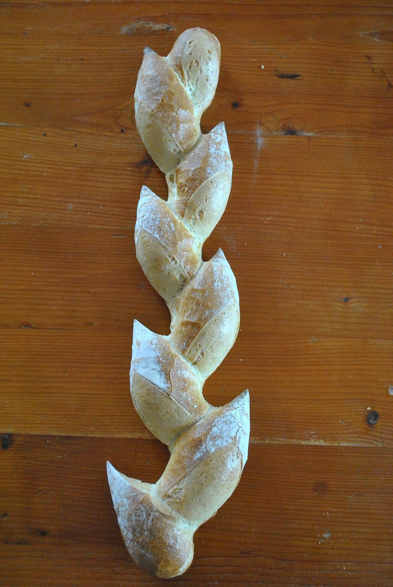

お店について
にっせベーカリー
長崎県佐世保市桑木場町のパン屋さん。お店の歴史・こだわり・スタッフ紹介は、取材のうえ掲載する予定です(準備中)。

コンセプト案(制作側の提案)
以下はお店の考えではなく、制作側が試作のために考えた案です。
「毎日のちょっとした楽しみに」。暮らしのそばにあるパン屋として、あたたかく親しみやすい雰囲気を、やわらかな緑とあたたかい朱色で表現しました。
実際のお店の想いに合わせて、文章も色も作り直せます。
店名にっせベーカリー
所在地長崎県佐世保市桑木場町2591-4
スタッフ準備中(お問い合わせください)
営業時間準備中(お問い合わせください)